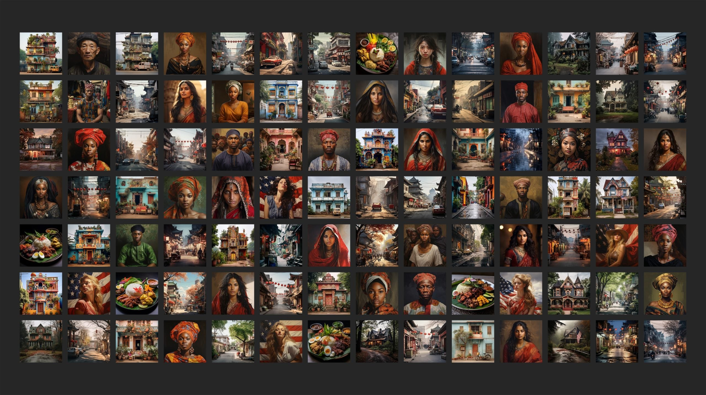
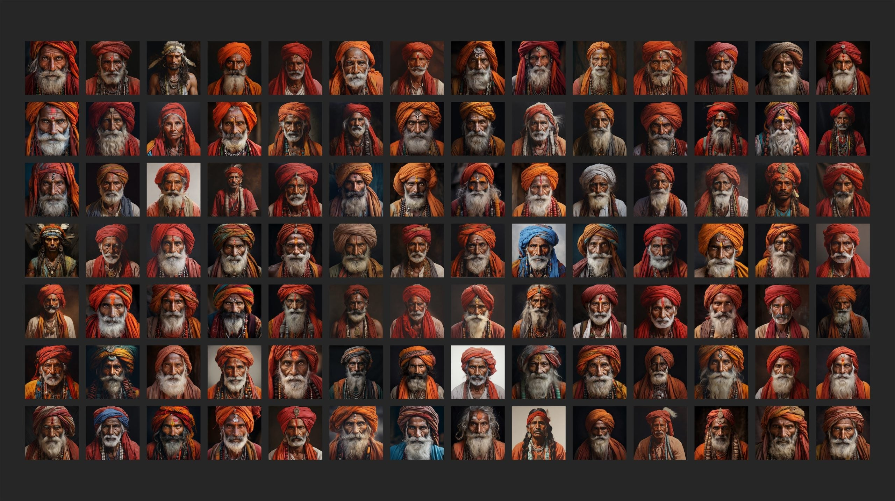
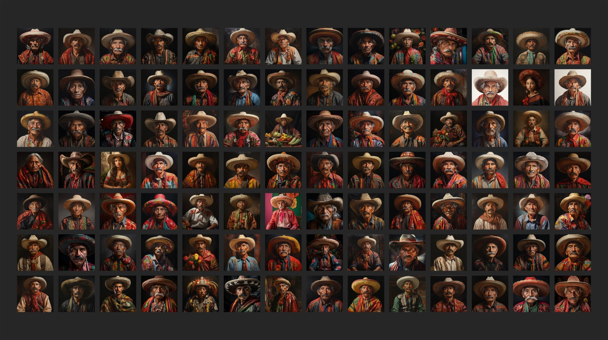
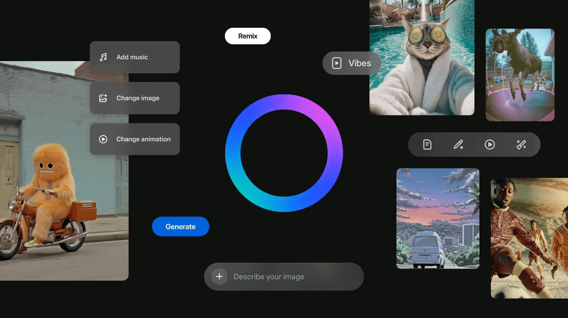
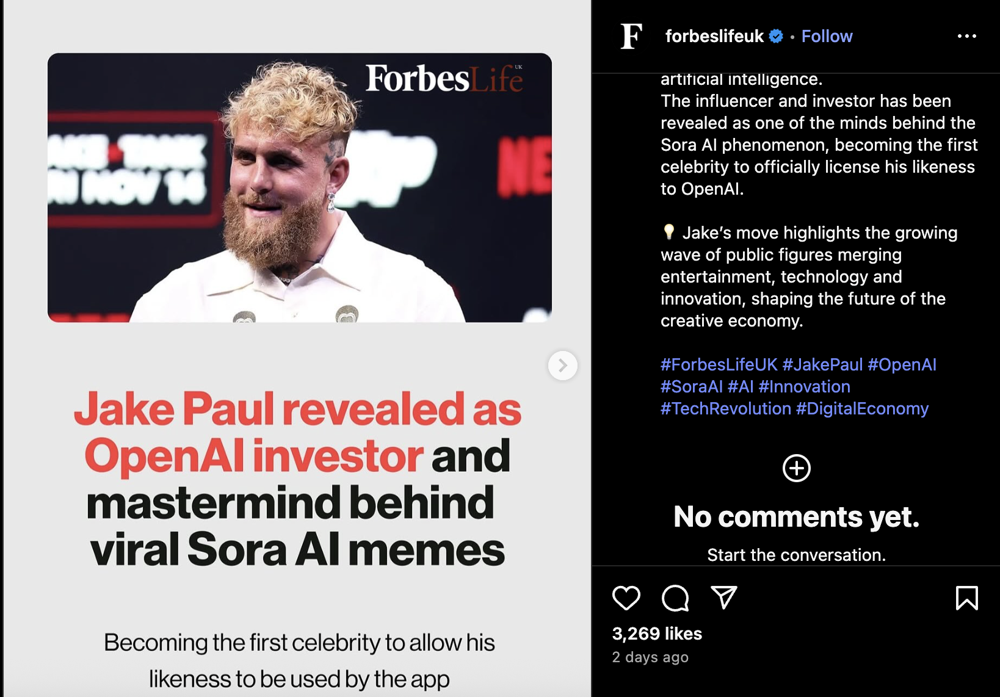
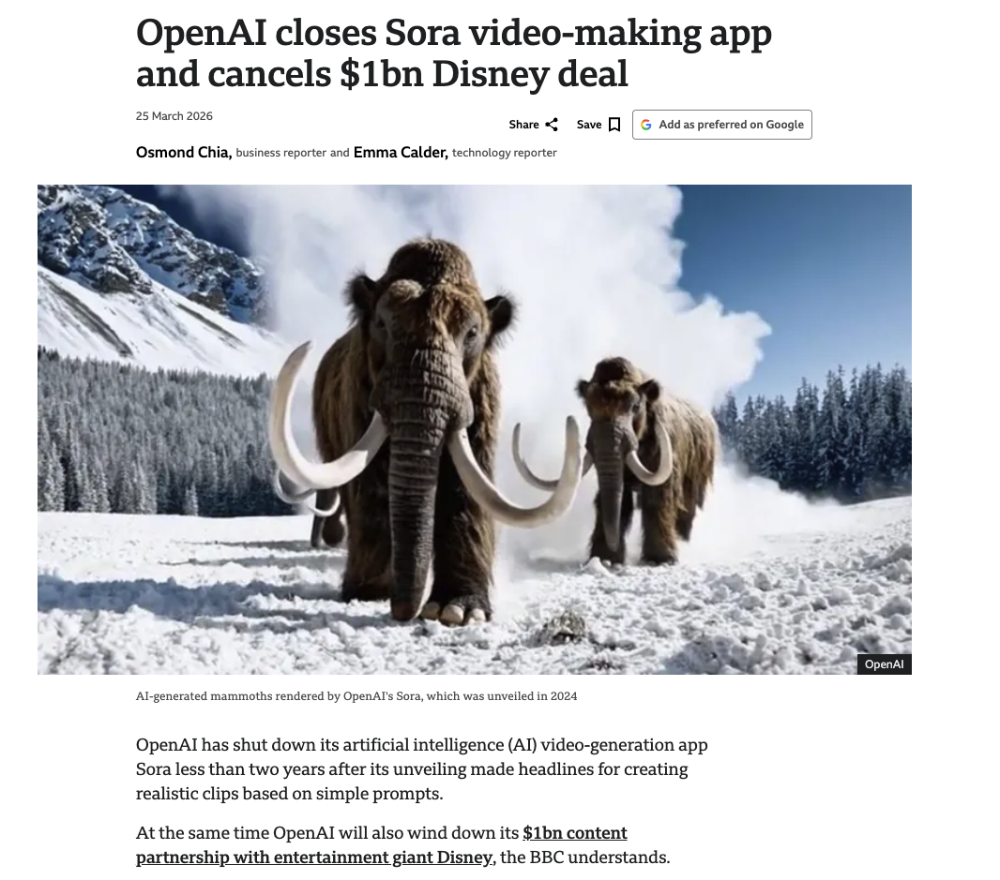

Multiplayer servers, game streaming (Xbox Cloud, GeForce Now)
E-Commerce & Crypto
Amazon, Shopify, Bitcoin mining, blockchain
AI & Data Centers
Traditional Applications
AI Applications
Power
Only require CPU
Requires high-end GPU/TPU clusters
Heat & Cooling
Traditional air cooling
Liquid water cooling (higher density packing)
Usage Patterns
Ebbs & Flows
Runs 24/7, no idle time
Growth Rate
Grown steadily over decades
Growing exponentially
The Civilizing Mission
The Default is Western
Prompt: "beautiful woman"
9 in 10 outputs are light-skinned (Midjourney)
Only 2% showed single-fold eyelids
— Washington Post, 2024
Prompt: "a person"
Defaults to light-skinned men
Women of colour are sexualized
— University of Washington, 2023
Prompt: "a CEO"
Stable Diffusion: almost exclusively white men
— Bloomberg, 2023

Midjourney outputs for neutral prompts across cultures Source: Rest of World, 2023
AI Stereotypes by Country

Midjourney: "an Indian person"

Midjourney: "a Mexican person"
Google Gemini's "fix": a diversity filter that generated Black Nazi soldiers and Asian US founding fathers — paused within days after backlash. You can't patch structural bias with a checkbox.
Competitive Justification
The AI Arms Race
The Logic
"We must build AGI before China does"
Safety concerns reframed as weakness
Reckless speed becomes patriotic duty
Minimal regulation = competitive advantage
The Reality
Microsoft: $13B into OpenAI
Google, Meta, Amazon: $50B+/year each on AI infrastructure
A handful of companies concentrate unprecedented power
The race isn't between nations — it's between corporations
The Geopolitical Triangle
United States
"Maintain American AI dominance"
CHIPS Act — $52B
Export controls on chips to China
Altman to Congress: "lead or authoritarian regimes will"
China
AI strategy since 2017
Baidu, Alibaba, ByteDance
DeepSeek — rivalling GPT-4
Self-sufficiency push after chip bans
Netherlands
ASML — only maker of EUV lithography machines
Without ASML, no advanced AI chips
US pressured Dutch export restrictions
One company in Brabant controls the global bottleneck
The pattern: governments frame it as national security — but the money flows to private corporations. Nvidia's market cap tripled. OpenAI: nonprofit → $150B. ASML machines cost $380M each.
Google + YouTube + Veo3
Google's video generation model integrated into YouTube, enabling AI-generated video content at scale.
Meta + Vibes

Meta's generative AI tools integrated across Instagram and Facebook for content creation.
OpenAI + Sora2
OpenAI's next-generation video model — higher fidelity, longer clips, better prompt adherence.
OpenAI + Sora2

AI Video Generation Examples
OpenAI + Sora2
OpenAI + Sora2
AI Video Examples

The Consequences
What happens when empire logic meets generative AI?
The Liar's Dividend
The Liar's Dividend
Fake Evidence Used as Real
AI-generated audio of a Baltimore principal making racist remarks -- fabricated by a colleague (2024)
Deepfake robocalls imitating Biden's voice told voters not to vote in New Hampshire primary (2024)
Real Evidence Denied as Fake
Gabon coup: government video of President Bongo dismissed as deepfake by military (2023)
Indian politicians dismiss leaked audio recordings as "AI-generated" without investigation
The paradox: the more we fear fake content, the easier it becomes to deny real content. Trust in all media erodes.
Model Collapse
The Feedback Loop
When models train on the outputs of other models, each generation becomes more generic, more repetitive, and less diverse.
— Shumailov et al., The Curse of Recursion, 2023
The Internet Is Eating Itself
AI Slop Everywhere
Amazon flooded with AI-generated books
Stock sites filling with synthetic images
News sites publishing AI-written articles
Social media awash in AI-generated content
What Gets Erased
Minority languages — already underrepresented
Oral traditions — never digitized to begin with
Indigenous knowledge — flattened into Western categories
Cultural specificity — replaced by generic averages
Concentration of Power
The Internet vs. AI
The Early Internet
Open protocols — email, HTTP, RSS
Anyone can run a server
Decentralized by design
Low barrier to entry
The AI Era
Proprietary models — GPT, Gemini, Claude
Training costs $100M+
Concentrated in 3–4 corporations
You use their API, their terms
The East India Company Parallel
A private corporation, chartered by the state, that became more powerful than the state. Its own army, courts, and currency. It governed 200 million people.
Today's Version
Schools use GPT. Hospitals use AI diagnostics. Courts use AI risk assessment.
Governments depend on private AI infrastructure they don't control
These companies decide what gets filtered, flagged, or generated
Governance without elections
Deskilling & Cognitive Dependency
The Calculator Effect at Scale
Calculators (1970s)
Lost skill: mental arithmetic
Narrow, mechanical task
Easy to verify outputs
Augments one specific ability
AI (Now)
Lost skills: writing, reasoning, diagnosis, design
Broad, cognitive tasks
Hard to verify if you lack the skill
Replaces judgment itself
The Dependency Trap
Junior developers who can't code without Copilot
Medical students using AI diagnostics without learning the reasoning
Law students who can't draft without GPT
Designers who can't sketch without Midjourney
If you never learn the skill, you can't evaluate whether the AI is right or wrong.
Consent Laundering
The Pattern
Company offers a service — users share data
Terms say nothing about AI training
Years later, terms are quietly updated
User data is retroactively claimed for AI
Nobody reads the update — consent is manufactured
The Timeline
July 4, 2023 — Google broadens privacy policy to use Docs, Maps, and user data for AI training (published on a US holiday)
2024 — Adobe claims broad rights over Creative Cloud content; photographers and designers revolt
2023 — Zoom changes terms to allow AI training on meeting content; reverses after backlash
2023 — X (Twitter) updates terms to use posts for Grok training
2024 — LinkedIn trains AI on member posts; adds opt-out only after exposure
The pattern: take first, ask forgiveness later — if anyone notices.
Conclusion
The Empire of AI
Resource Appropriation
Training data scraped from billions without permission — laying claim to the world's creative output to build proprietary empires
Labor Exploitation
$2/hour content moderators clean up the mess while trillion-dollar companies reap the profits — colonial labor patterns persist
Competitive Justification
"We must build AGI before China does" — the same logic empires used to justify expansion by pointing to rival empires
The Civilizing Mission
"Democratizing AI" and "benefiting humanity" — while encoding Western biases and flattening cultural diversity at planetary scale
Scale at All Costs
Imperial expansion demanding more land, water, and energy — environmental burden externalized onto marginalized communities
Questions?
Workshop
Explore generative AI models directly in your browser
Text to Image
Generate images from text prompts
Image to Image
Transform the style of a photo
Image to Text
AI describes what it sees
PhotoMaker
Generate new images of a person
Image to 3D
Turn a photo into a 3D model
Text to 3D
Generate 3D objects from text
Face Swap
Swap faces between two photos
Pose Transfer
Generate from a body pose
No accounts needed. Your data is not saved. All models are free & open-source.
Next Time
Introduction to Deepfakes
Through the lens of the empire
1. Resource Appropriation
Faces, voices, and likenesses scraped without consent
2. Scale at All Costs
Deepfake tools becoming cheaper, faster, and more accessible
3. Labor Exploitation
Non-consensual intimate imagery disproportionately targeting women
4. The Civilizing Mission
"Creative tools for everyone" masking real harms
5. Competitive Justification
If we don't build detection tools, someone else will weaponize them first